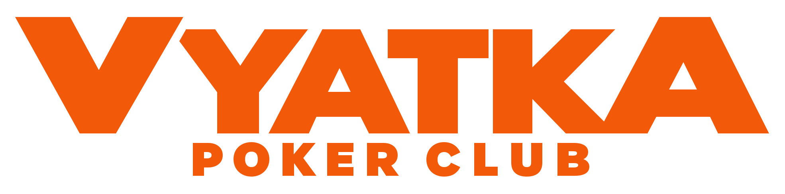

Утверждено Николаевским Максимом Станиславовичем, 21 сентября 2026 г. Настоящая редакция Политики утверждена 21.09.2026 и применяется к персональным данным, обрабатываемым Оператором на дату её утверждения, в том числе полученным ранее, если их обработка продолжается на законном основании.
1.1. Настоящая Политика обработки персональных данных разработана в соответствии с Федеральным законом от 27.07.2006 № 152-ФЗ «О персональных данных» и иными применимыми нормативными правовыми актами Российской Федерации.
1.2. Настоящая Политика определяет порядок обработки персональных данных и меры по обеспечению безопасности персональных данных, предпринимаемые оператором персональных данных.
1.3. Оператором персональных данных является: Николаевский Максим Станиславович, ИНН 434594983422 (далее — Оператор).
1.4. Оператор ставит своей важнейшей целью и условием осуществления деятельности соблюдение прав и свобод человека и гражданина при обработке его персональных данных, включая защиту права на неприкосновенность частной жизни.
1.5. Настоящая Политика применяется ко всей информации, которую Оператор может получить:
1.6. Оператор публикует настоящую Политику либо иным образом обеспечивает к ней неограниченный доступ.
2.1. Персональные данные — любая информация, относящаяся прямо или косвенно к определённому или определяемому физическому лицу.
2.2. Обработка персональных данных — любое действие или совокупность действий с персональными данными, совершаемых с использованием средств автоматизации или без их использования, включая сбор, запись, систематизацию, накопление, хранение, уточнение, извлечение, использование, передачу, обезличивание, блокирование, удаление и уничтожение.
2.3. Субъект персональных данных — физическое лицо, к которому относятся обрабатываемые персональные данные.
2.4. Оператор — лицо, самостоятельно или совместно с другими лицами организующее и (или) осуществляющее обработку персональных данных, а также определяющее цели обработки, состав данных и действия, совершаемые с ними.
3.1. Оператор осуществляет обработку персональных данных следующих категорий субъектов:
4.1. Оператор может обрабатывать следующие персональные данные:
4.2. Оператор не осуществляет обработку специальных категорий персональных данных, за исключением случаев, прямо предусмотренных законодательством Российской Федерации.
5.1. Персональные данные обрабатываются Оператором в следующих целях:
6.1. Правовыми основаниями обработки персональных данных являются:
7.1. Обработка персональных данных осуществляется с использованием средств автоматизации, а также без использования таких средств.
7.2. Оператор вправе совершать с персональными данными следующие действия: сбор, запись, систематизация, накопление, хранение, уточнение (обновление, изменение), извлечение, использование, передача (предоставление, доступ) в случаях, предусмотренных законодательством Российской Федерации либо необходимых для достижения целей обработки, обезличивание, блокирование, удаление, уничтожение.
7.3. Оператор принимает необходимые правовые, организационные и технические меры для защиты персональных данных от неправомерного или случайного доступа, уничтожения, изменения, блокирования, копирования, распространения и иных неправомерных действий.
7.4. Оператор вправе поручить обработку персональных данных третьим лицам либо предоставить им доступ к персональным данным в объёме, необходимом для достижения целей обработки, при наличии соответствующих правовых оснований и при соблюдении требований законодательства Российской Федерации.
8.1. Во время проведения турниров и иных мероприятий Оператором может осуществляться фото- и видеосъёмка.
8.2. Фото- и видеоматериалы могут использоваться Оператором в целях:
8.3. Использование изображения гражданина осуществляется с соблюдением требований законодательства Российской Федерации. По общему правилу обнародование и дальнейшее использование изображения гражданина допускается только с его согласия.
9.1. Персональные данные обрабатываются и хранятся не дольше, чем этого требуют цели обработки персональных данных, если иной срок не установлен законодательством Российской Федерации.
9.2. По достижении целей обработки, при утрате необходимости в их достижении либо при отзыве согласия субъектом персональных данных обработка персональных данных подлежит прекращению, а персональные данные — удалению или уничтожению, если иное не предусмотрено законодательством Российской Федерации.
10.1. Субъект персональных данных имеет право:
10.2. Согласие на обработку персональных данных должно быть конкретным, предметным, информированным, сознательным и однозначным, а обязанность доказать наличие согласия или иного законного основания обработки лежит на операторе.
11.1. Субъект персональных данных вправе направить Оператору обращение, запрос или заявление по вопросам обработки персональных данных в письменной форме либо в форме электронного сообщения по контактным данным, доведённым Оператором до сведения субъекта.
11.2. Оператор рассматривает обращения субъектов персональных данных в порядке и сроки, предусмотренные законодательством Российской Федерации.
12.1. Настоящая Политика действует бессрочно до замены её новой редакцией.
12.2. Актуальная редакция Политики размещается в сети Интернет и предоставляется субъектам персональных данных для ознакомления.
12.3. Во всём, что не урегулировано настоящей Политикой, Оператор руководствуется законодательством Российской Федерации о персональных данных.
2.1. Я выражаю согласие на проведение во время турниров и иных мероприятий с моим участием фото- и видеосъёмки, создание фотографий, видеозаписей и иных материалов, на которых присутствует моё изображение, в отношении Николаевского Максима Станиславовича, ИНН 434594983422 (далее — Оператор).
2.2. Я выражаю согласие на обнародование и дальнейшее использование моего изображения Оператором в целях освещения проведения турниров и иных мероприятий, публикации результатов и новостей, размещения фотоотчётов, видеороликов, анонсов и иных материалов о деятельности Оператора.
2.3. Моё изображение может использоваться в Telegram-каналах, чатах, ботах и мини-приложениях Оператора, на сайте, в социальных сетях, а также в печатных и электронных информационных, архивных, презентационных и рекламно-информационных материалах Оператора.
2.4. Я подтверждаю, что согласие на использование изображения даётся без выплаты мне вознаграждения, если иное отдельно не согласовано с Оператором.
Проставляя галочку в приложении, я выражаю своё согласие в электронной форме.